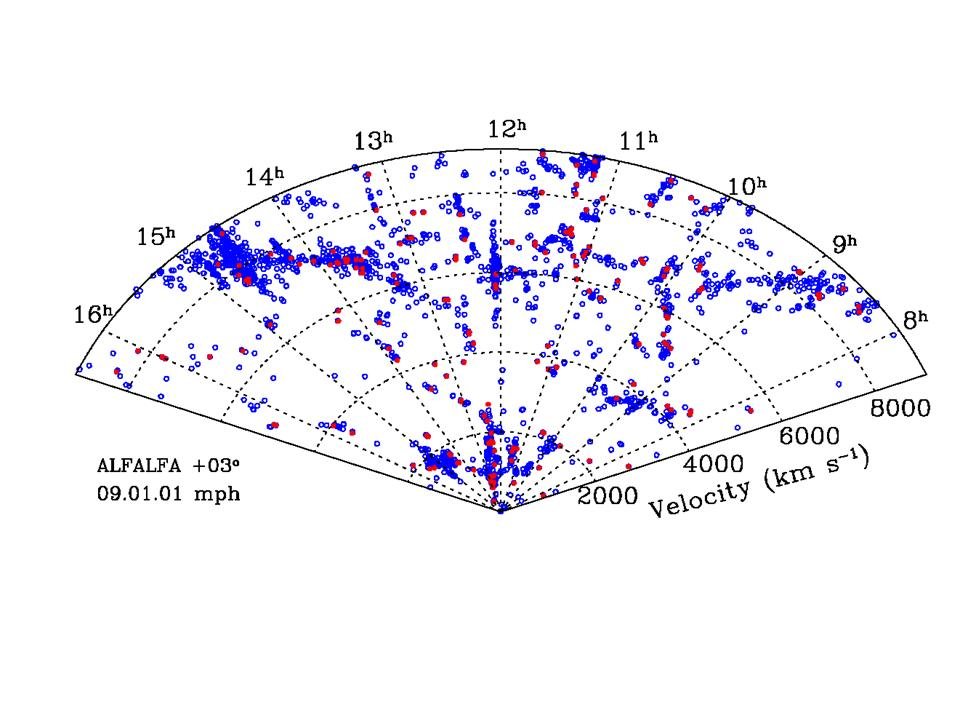

UAT09.01 Scavenger Hunt #3: Introduction to ALFALFA grids and catalog data
This scavenger hunt will provide an introduction to the ALFALFA catalogs, deriving galaxy properties from observational data and investigating the large scale structure.- ALFALFA grids and catalogs
Here is a small subset of the ALFALFA catalog containing the currently available spring data south of Dec < +04 degrees. Additionally, here are some screen shots of LOVEDATA screens of two objects contained in the subcatalog. Refer to this subcatalog and these figures in answering the following questions. Note: We are interested in sources that will be in the +3 degree grids, but of course, since we are still observing that part of the sky, the grids don't yet exist. So these sources all lie in the southernmost part of the +5 degree grids, and will also show up in the +3 degree ones. a. The HI profile is often two-horned. Sometimes it has a Gaussian shape. Under what circumstances would be expect to see a Gaussian shape, rather than the characteristic two horns? b. How is the profile width, W50, measured on a two-horned profile? c. What is meant by "rms"? d. What is meant by "SN"? e. In the GRIDVIEW displays, what causes the patterns of dark blue dots in the right hand panel? e. What is the HI source name of AGC214473? f. Why isn't the "position" in the HI source name the same as the "ellipse center" position? g. What grid contains AGC 214473? h. What is the HI mass of AGC 214473? i. What is the heliocentric velocity of HI123117.1+035049? j. What is unusual about AGC 227983? k. There are 3 HI emission features in the GALCAT display of the spectrum of AGC 227983. What do they arise from? l. In what favorite ALFALFA team movie does the physicist hero say: "You know, there's such a very thin dividing line between 'inspiration' and 'obsession', that sometimes it's very hard to decide which side we're really on!" 
A214473 GRIDVIEW
A214473 GALCAT
A227983 GRIDVIEW
A227983 GALCAT
- Exploring the SDSS
To estimate the total dynamical mass of a galaxy, we need to make use of optical
and HI line data. Let's explore the object mentioned above AGC 214473.
For starters, let's find the image
and some basic SDSS data on this galaxy.
a. Describe the appearance of the galaxy in the SDSS image
b. What is the rest wavelength of the strongest emission line seen in its spectrum?
c. How much brighter is the galaxy in the r-band than in the u-band?
d. In a very famous movie, what would be the (r-i) color index
of Mary Kate Danaher's hair?
e. Then go to the
SQL for DR7
amd run the SQL query below:
What is the angular diameter of the galaxy in kpc? f. What is the inclination of the galaxy? Explain how you get your answer. g. Using the information you have available, calculate the rotational velocity of the galaxy? h. Then calculate the dynamical mass of the galaxy, in solar units. What assumptions do you have to make? i. What fraction of the galaxy's total mass is made up of HI? j. What famous astronomer is known to say that "HI makes up a piffling amount of the matter in the universe"?SELECT p.ra, p.dec,s.z,s.zerr,p.petroR90_r,p.expAB_r, p.petroMag_u,p.petroMag_r, p.objID FROM PhotoObj p, SpecObj s, SpecLine l WHERE p.SpecObjID = s.SpecObjID AND p.SpecObjID = l.specobjID AND s.specClass=2 AND l.lineID = dbo.fSpecLineNames('Ha_6565') AND p.objID=588010358007595145
- Distances: Hubble's Law doesn't always work!
a. What is the redshift of M31, the Andromeda galaxy?
b. What is the distance to M31? Give you answer in both light years and Mpc.
c. UGC 7470 = IC 3258 is detected by ALFALFA with a heliocentric velocity
of -430 km/s. What is its probable distance?
d. What is the motion of the Sun with respect to the frame of rest of
the Cosmic Microwave Background radiation?
- Galaxies cluster!
Here are two diagrams of the current AGC redshift distribution in the sky area that will be contained in the future ALFALFA spring sky +03o grids. The slices shown are bounded by 07h30m < R.A. < 16h30m and +01.75o < Dec. < +04.25o. The velocities here are heliocentric. Blue points illustrate the locations of galaxies of known redshift; filled red circles mark ones with (current) HI data. ALFALFA will add to both these diagrams. Refer to the diagrams in answering the following questions. Note: since the ALFALFA results are not yet available, there aren't very many red points in these diagrams! Next year, they will look much richer, especially the lower one.
a. Identify the clusters in the distribution and find their matches in the NED b. Identify a filamentary structure. How long (in Mpc) is it (assuming it is real)? c. In what movie is Clark Gable's character determined to return to the Bungo Straights? d. Estimate the size (in Mpc) of the apparent void centered at R.A. ~9h20m, cz ~ 14000 km/s. e. In what movie is it said "...[The] rules of engagement are written for your safety and for that of your team. They are not flexible... Either obey them or you are history. Is that clear?"
Cone diagram of the full ALFALFA velocity range
Cone diagram of the inner 9000 kms/s
This page created by and for the members of the ALFALFA Survey Undergraduate team Last modified: Tue Jan 6 15:41:07 EST 2009 by Martha
{kind=link}